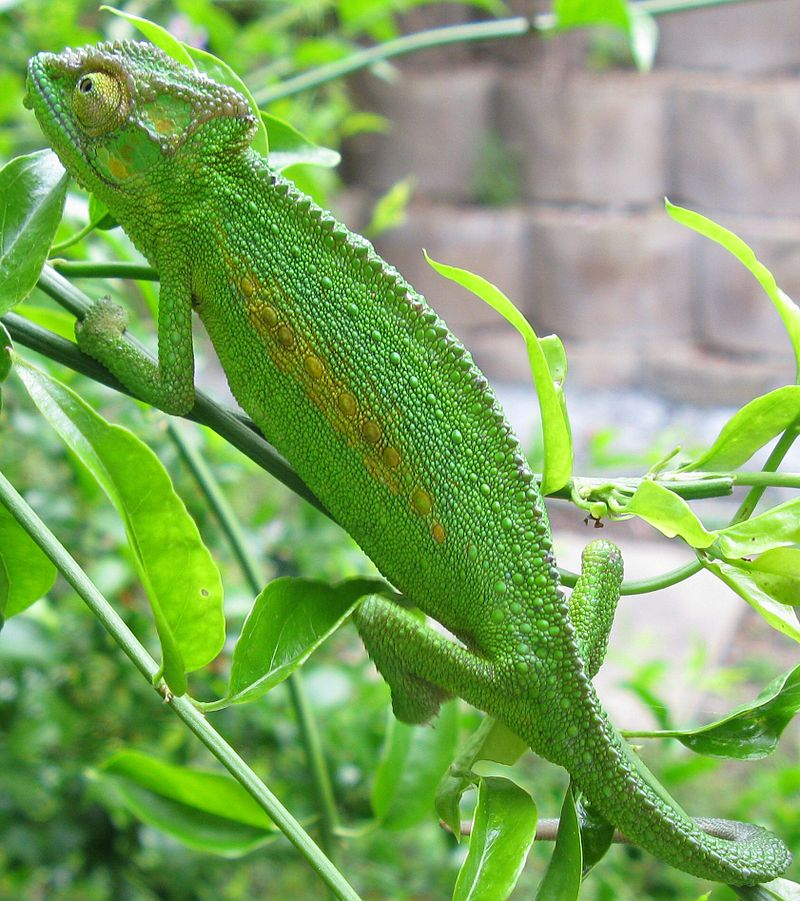

Camaleones
(Chamaeleonidae)

Hábitat
Los camaleones viven, en su mayor parte, en ambientes forestales, pero también se hallan algunos en matorrales, y algunas especies viven en el suelo, debajo de las hojas. Pueden pasar de un árbol a otro gracias a la habilidad prensil de su cola y de sus patas.
Además de la característica propia de cambiar de color, los camaleones también cambian de piel como las serpientes, dos veces al año.
Caracteristicas
-
El aspecto es similar a de otros reptiles como las iguanas. Una de sus características principales son los adornos en la cabeza y cara, que según la especie pueden ser protuberancias, crestas o incluso cuernos.
-
Los ojos también sumamente llamativos, ya que son grandes, prominentes y cuentan con un párpado que los recubre completamente a excepción de una pequeña abertura circular en el centro, la cual corresponde al iris y pupila.
-
No presenta oídos externos, aunque pueden detectar vibraciones y sonidos de baja frecuencia.
-
La lengua del camaleón es excesivamente larga, la cual incluso puede llegar a medir más que su propio cuerpo.
-
Este animal tiene cuatro patas que se dividen en dos dedos principales que están dotados de garras con las que pueden trepar.